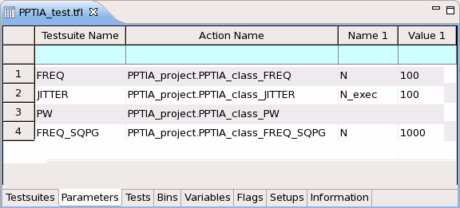
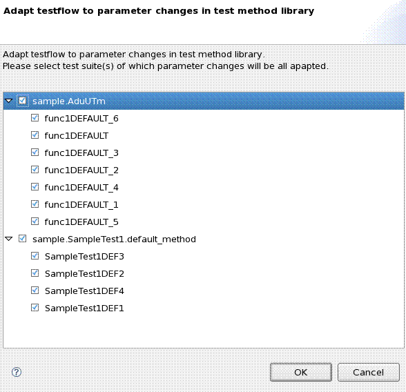

Parameters page
The Parameters page contains the parameter setup information for test methods. The
Action Name column contains proj.class for universal test method. The further
columns contain the names and the values of the parameters. For example, Name 2 contains the name
of the second parameter and Value 2 the value of the second parameter.
Note To display the test method parameters, you must build the test method library
first.

Adjust testflow to parameter changes in test method library
If you modified the parameter or limit definition of the test methods which are used by the current testflow, the Check All Inconsistencies button will be enabled. This button will bring up the following dialog to adjust testflow according to the parameter and limit changes in the test methods.

Functional changes
- Introduced before SmarTest 6.3.2
- SmarTest 6.5.2: The parameters on this page are editable.
- SmarTest 6.5.3: Check All Inconsistencies button is available.